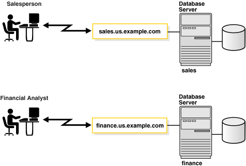
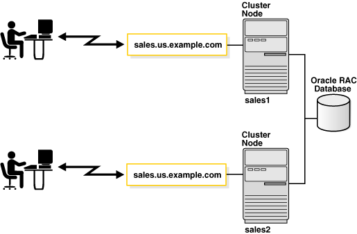
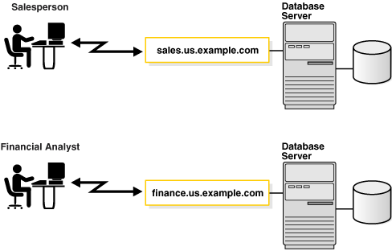
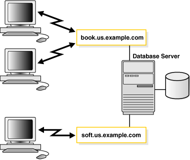
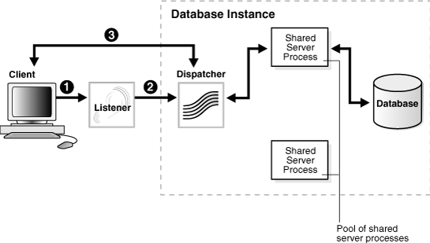
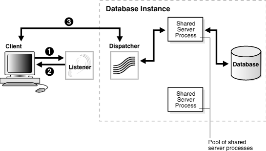
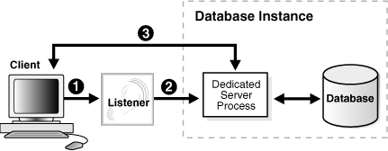
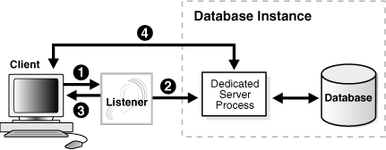
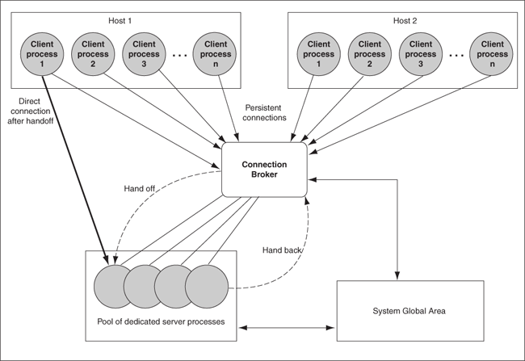

2 Identifying and Accessing the Database
Understand how databases are identified, and how clients access them.
- Understanding Database Instances
A database has at least one instance. An instance is comprised of a memory area called the System Global Area (SGA) and Oracle background processes. - Understanding Database Services
An Oracle database is represented to clients as a service. A database can have one or more services associated with it. - Connecting to a Database Service
To connect to a database service, clients use a connect descriptor that provides the location of the database and the name of the database service. - Understanding Service Handlers
Service handlers act as connection points to an Oracle database. A service handler can be a dispatcher or a dedicated server process, or pooled. - Understanding Naming Methods
Oracle Net Services offers several types of naming methods that support localized configuration on each client, or centralized configuration that can be accessed by all clients in the network. - Enhancing Service Accessibility Using Multiple Listeners
For some configurations, such as Oracle RAC, multiple listeners on multiple nodes can be configured to handle client connection requests for the same database service.
Parent topic: Understanding Oracle Net Services
2.1 Understanding Database Instances
A database has at least one instance. An instance is comprised of a memory area called the System Global Area (SGA) and Oracle background processes.
The memory and processes of an instance efficiently manage the associated database's data and serve the database users.
Note:
An instance also manages other services, such as Oracle XML DB.
The following figure shows two database instances, sales and
finance, associated with their respective databases and service
names.
Figure 2-1 One Instance for Each Database

Description of "Figure 2-1 One Instance for Each Database"
Instances are identified by an instance name, such as sales and finance in this example. The instance name is specified by the INSTANCE_NAME initialization parameter. The instance name defaults to the Oracle system identifier (SID) of the database instance.
Some hardware architectures allow multiple computers to share access to data, software, or peripheral devices. Oracle Real Application Clusters (Oracle RAC) can take advantage of such architecture by running multiple instances on different computers that share a single physical database.
The following figure shows an Oracle RAC configuration. In this example, two
instances, sales1 and sales2, are associated with one
database service, sales.us.example.com.
Figure 2-2 Multiple Instances Associated with an Oracle RAC Database

Description of "Figure 2-2 Multiple Instances Associated with an Oracle RAC Database"
Parent topic: Identifying and Accessing the Database
2.2 Understanding Database Services
An Oracle database is represented to clients as a service. A database can have one or more services associated with it.
The following figure shows two databases, each with its own database service for
clients. One service, sales.us.example.com, enables salespersons to
access the sales database. Another service, finance.us.example.com,
enables financial analysts to access the finance database.
Figure 2-3 One Service for Each Database

Description of "Figure 2-3 One Service for Each Database"
The sales and finance databases are each identified by a service name,
sales.us.example.com and finance.us.example.com,
respectively. A service name is a logical representation of a database. When an instance
starts, it registers itself with a listener using one or more service names. When a
client program or database connects to a listener, it requests a connection to a
service.
A service name can identify multiple database instances, and an instance can belong to multiple services. For this reason, the listener acts as a mediator between the client and instances and routes the connection request to the appropriate instance. Clients connecting to a service need not specify which instance they require.
The service name is specified by the SERVICE_NAMES initialization parameter in the
server parameter file. The server parameter file enables you to change initialization
parameters with ALTER SYSTEM commands, and to carry the changes across
a shutdown and startup. The DBMS_SERVICE package can also be used to create services.
The service name defaults to the global database name, a name comprising the database
name (DB_NAME initialization parameter) and domain name (DB_DOMAIN initialization
parameter). In the case of sales.us.example.com, the database name is
sales and the domain name is us.example.com.
Note:
Starting with Oracle Database 19c, customer use of theSERVICE_NAMES parameter is deprecated. To manage your services, Oracle recommends that you use the SRVCTL or GDSCTL command line utilities, or the DBMS_SERVICE package.
The following figure shows clients connecting to multiple services associated with one database.
Figure 2-4 Multiple Services Associated with One Database

Description of "Figure 2-4 Multiple Services Associated with One Database"
Associating multiple services with one database enables the following functionality:
-
A single database can be identified different ways by different clients.
-
A database administrator can limit or reserve system resources. This level of control enables better allocation of resources to clients requesting one of the services.
See Also:
-
Oracle Database Administrator's Guide for additional information about initialization parameters
-
Oracle Database SQL Reference for additional information about the
ALTER SYSTEMstatement -
Oracle Database Reference for additional information about the
SERVICE_NAMESparameter -
Oracle Database PL/SQL Packages and Types Reference for additional information about the
DBMS_SERVICEpackage.
Parent topic: Identifying and Accessing the Database
2.3 Connecting to a Database Service
To connect to a database service, clients use a connect descriptor that provides the location of the database and the name of the database service.
The following example is an Easy Connect descriptor that connects to a database service named sales.us.example.com, and the host sales-server (the port is 1521 by default):
sales-server/sales.us.example.com
The following example shows the entry in the tnsnames.ora file for the preceding Easy Connect connect descriptor and database service:
(DESCRIPTION= (ADDRESS=(PROTOCOL=tcp)(HOST=sales-server)(PORT=1521)) (CONNECT_DATA= (SERVICE_NAME=sales.us.example.com)))
Related Topics
Parent topic: Identifying and Accessing the Database
2.3.1 About Connect Descriptors
A connect descriptor is comprised of one or more protocol addresses of the listener and the connect information for the destination service in the tnsnames.ora file. Example 2-1 shows a connect descriptor mapped to the sales database.
Example 2-1 Connect Descriptor
sales=
(DESCRIPTION=
(ADDRESS=(PROTOCOL=tcp)(HOST=sales-server)(PORT=1521))
(CONNECT_DATA=
(SID=sales)
(SERVICE_NAME=sales.us.example.com)
(INSTANCE_NAME=sales)))
As shown in Example 2-1, the connect descriptor contains the following parameters:
-
The ADDRESS section contains the following:
-
PROTOCOL parameter, which identifies the listener protocol address. The protocol is
tcpfor TCP/IP. -
HOST parameter, which identifies the host name. The host is
sales-server. -
PORT parameter, which identifies the port. The port is
1521, the default port number. -
Optional HTTPS_PROXY and HTTPS_PROXY_PORT parameters, that allow the database client connection to traverse through the organization’s forward web proxy. These parameters are applicable only to the connect descriptors where PROTOCOL=TCPS.
-
-
The CONNECT_DATA section contains the following:
-
SID parameter, which identifies the system identifier (SID) of the Oracle database. The SID is
sales. -
SERVICE_NAME parameter, which identifies the service. The destination service name is a database service named
sales.us.example.com.The value for this connect descriptor parameter comes from the SERVICE_NAMES initialization parameter (SERVICE_NAMES uses a final S) in the initialization parameter file. The SERVICE_NAMES initialization parameter is typically the global database name, which includes the database name and domain name. In the example,
sales.us.example.comhas a database name ofsalesand a domain ofus.example.com.Note:
Starting with Oracle Database 19c, customer use of theSERVICE_NAMESparameter is deprecated. To manage your services, Oracle recommends that you use theSRVCTLorGDSCTLcommand line utilities, or theDBMS_SERVICEpackage. -
INSTANCE_NAME parameter, which identifies the database instance. The instance name is optional.
The INSTANCE_NAME parameter in the initialization parameter file defaults to the SID entered during installation or database creation.
-
- About IPv6 Addresses in Connect Descriptors
A host can use IP version 4 (IPv4) and IP version 6 (IPv6) interfaces. IPv6 addresses and host names that resolve to IPv6 addresses are usable in theHOSTparameter of a TNS connect address, which can be obtained through any of the supported net naming methods.
See Also:
"Understanding Database Instances", and "Understanding Database Services"
Parent topic: Connecting to a Database Service
2.3.1.1 About IPv6 Addresses in Connect Descriptors
A host can use IP version 4 (IPv4) and IP version 6 (IPv6) interfaces. IPv6 addresses and host names that resolve to IPv6 addresses are usable in the HOST parameter of a TNS connect address, which can be obtained through any of the supported net naming methods.
End-to-end connectivity using IPv6 in Oracle Database 12c requires the following configuration:
-
The client TNS connect address must connect to the Oracle Net Listener on the IPv6 endpoint.
-
The database instance configured for Oracle Net Listener must listen for connection requests on IPv6 endpoints.
For a given host name, Oracle Net attempts to connect to all IP addresses returned by Domain Name System (DNS) name resolution until a successful connection is established or all addresses have been attempted. Suppose that in a connect descriptor, the sales-server host is an IPv4-only host that is accepting client connections. DNS maps sales-server to the following IP addresses:
-
IPv6 address
2001:0db8:0:0::200C:417A -
IPv4 address
192.0.2.213
In this case, Oracle Net first tries to connect on the IPv6 address because it is first in the DNS list. In this example, sales-server does not support IPv6 connectivity, so this attempt fails. Oracle Net proceeds to connect to the IPv4 address, which succeeds.
2.3.2 About the Protocol Address
The address portion of the connect descriptor is the protocol address of the listener. To connect to a database service, clients first contact a listener process that typically resides on the database server. The listener receives incoming client connection requests and sends these requests to the database server. After the connection is established, the client and database server communicate directly.
The listener is configured to accept requests from clients at a protocol address. This address defines the protocol the listener is listening on and any other protocol-specific information. For example, the listener could be configured to listen at the following protocol address:
(DESCRIPTION= (ADDRESS=(PROTOCOL=tcp)(HOST=sales-server)(PORT=1521)))
The preceding example shows a TCP/IP protocol address that specifies the host of the listener and a port number. Client connect descriptors configured with this same protocol address can send connection requests to this listener.
Parent topic: Connecting to a Database Service
2.3.3 About Service Registration
The connect descriptor specifies the database service name with which clients seek to establish a connection. The listener knows which services can handle connection requests because Oracle Database dynamically registers this information with the listener. This process of registration is called service registration. Registration also provides the listener with information about the database instances and the service handlers available for each instance. A service handler can be a dispatcher or dedicated server.
Parent topic: Connecting to a Database Service
2.3.3.1 Specifying an Instance Name
If connecting to a specific instance of the database is required, then clients can specify the INSTANCE_NAME of a particular instance in the connect descriptor. This feature can be useful for an Oracle RAC configuration. For example, the following connect descriptor specifies the instance name sales1 that is associated with sales.us.example.com.
(DESCRIPTION=
(ADDRESS=(PROTOCOL=tcp)(HOST=sales-server)(PORT=1521))
(CONNECT_DATA=
(SERVICE_NAME=sales.us.example.com)
(INSTANCE_NAME=sales1)))Parent topic: About Service Registration
2.3.3.2 Specifying a Service Handler
Clients that always want to use a particular service handler type can use a connect descriptor to specify the service handler type. In the following example, the connect descriptor uses (SERVER=shared) to request a dispatcher when connecting to a database. The database may be configured to use dedicated servers by default.
(DESCRIPTION=
(ADDRESS=(PROTOCOL=tcp)(HOST=sales-server)(PORT=1521))
(CONNECT_DATA=
(SERVICE_NAME=sales.us.example.com)
(SERVER=shared)))
When the listener receives the client request, it selects one of the registered service handlers. Depending on the type of handler selected, the communication protocol used, and the operating system of the database server, the listener performs one of the following actions:
-
Hands the connect request directly off to a dispatcher.
-
Sends a redirect message back to the client with the location of the dispatcher or dedicated server process. The client then connects directly to the dispatcher or dedicated server process.
-
Spawns a dedicated server process and passes the client connection to the dedicated server process.
After the listener has completed the connection operation for the client, the client communicates directly with the Oracle database without the listener's involvement. The listener resumes listening for incoming network sessions.
The following should be considered when specifying service handlers:
-
If you want the client to use a dedicated server, then specify
(SERVER=dedicated). If the SERVER parameter is not set, then a shared server configuration is assumed. However, the client will use a dedicated server if no dispatchers are available. -
If database resident connection pooling is enabled on the server, then specify
(SERVER=pooled)to get a connection from the pool. If database resident connection pooling is not enabled on the server, then the client request is rejected, and the user receives an error message.
See Also:
-
"About the Listener and Connection Requests" for a discussion about how the listener works with service handlers
-
Oracle Call Interface Programmer's Guide and Oracle Database Administrator's Guide
-
Oracle Database Global Data Services Concepts and Administration Guide for additional information about management of global services
Parent topic: About Service Registration
2.4 Understanding Service Handlers
Service handlers act as connection points to an Oracle database. A service handler can be a dispatcher or a dedicated server process, or pooled.
Parent topic: Identifying and Accessing the Database
2.4.1 About Dispatchers
The shared server architecture uses a dispatcher process to direct client connections to a common request queue. An idle shared server process from a shared pool of server processes picks up a request from the common queue. This approach enables a small pool of server processes to serve a large number of clients. A significant advantage of the shared server model over the dedicated server model is reduced system resources, enabling support of an increased number of users.
The listener uses the dispatcher as a type of service handler to which it can direct client requests. When a client request arrives, the listener performs one of the following actions:
-
Issues a redirect message to the client, containing the protocol address of a dispatcher. The client then terminates the network session to the listener and establishes a network session to the dispatcher, using the network address provided in the redirect message.
The listener uses direct hand off whenever possible. Redirect messages are used, for example, when dispatchers are remote to the listener.
Figure 2-5 shows the listener handing a connection request directly to a dispatcher.
-
The listener receives a client connection request.
-
The listener hands the connect request directly to the dispatcher.
-
The client is now connected to the dispatcher.
Figure 2-5 Direct Hand Off to a Dispatcher

Description of "Figure 2-5 Direct Hand Off to a Dispatcher"
Figure 2-6 shows the role of a dispatcher in a redirected connection.
-
The listener receives a client connection request.
-
The listener provides the location of the dispatcher to the client in a redirect message.
-
The client connects directly to the dispatcher.
Figure 2-6 Redirected Connection to a Dispatcher

Description of "Figure 2-6 Redirected Connection to a Dispatcher"
Parent topic: Understanding Service Handlers
2.4.2 About Dedicated Server Processes
In a dedicated server configuration, the listener starts a separate dedicated server process for each incoming client connection request dedicated to servicing the client. After the session is complete, the dedicated server process terminates. Because a dedicated server process has to be started for each connection, this configuration may require more system resources than shared server configurations.
A dedicated server process is a type of service handler that the listener starts when it receives a client request. To complete a client/server connection, one of the following actions occurs:
-
The dedicated server inherits the connection request from the listener.
-
The dedicated server informs the listener of its listening protocol address. The listener passes the protocol address to the client in a redirect message and terminates the connection. The client connects to the dedicated server directly using the protocol address.
One of the preceding actions is selected based on the operating system and the transport protocol.
If the client and database exist on the same computer, then a client connection can be passed directly to a dedicated server process without going through the listener. This is known as a bequeath protocol. The application initiating the session spawns a dedicated server process for the connection request. This happens automatically if the application used to start the database is on the same computer as the database.
Note:
In order for remote clients to connect to dedicated servers, the listener and the database instance must be running on the same computer.
Figure 2-7 shows the listener passing a client connection request to a dedicated server process.
-
The listener receives a client connection request.
-
The listener starts a dedicated server process, and the dedicated server inherits the connection request from the listener.
-
The client is now connected directly to the dedicated server.
Figure 2-7 Connection to a Dedicated Server Process

Description of "Figure 2-7 Connection to a Dedicated Server Process"
Figure 2-8 shows the role of a dedicated server in a redirected connection.
-
The listener receives a client connection request.
-
The listener starts a dedicated server process.
-
The listener provides the location of the dedicated server process to the client in a redirect message.
Figure 2-8 Redirected Connection to a Dedicated Server Process

Description of "Figure 2-8 Redirected Connection to a Dedicated Server Process"
Parent topic: Understanding Service Handlers
2.4.3 About Database Resident Connection Pooling
Database resident connection pooling provides a connection pool in the database server for typical web application usage scenarios in which an application acquires a database connection, works on it for a relatively short duration, and then releases it. Database resident connection pooling pools "dedicated" servers. A pooled server is the equivalent of a server foreground process and a database session combined. Database resident connection pooling uses dynamic registration between the server and the listener. It cannot use static registration.
Database resident connection pooling complements middle-tier connection pools that share connections between threads in a middle-tier process. In addition, it enables sharing of database connections across middle-tier processes on the same middle-tier host and even across middle-tier hosts. This results in significant reduction in key database resources needed to support a large number of client connections, thereby reducing the database tier memory footprint and boosting the scalability of both middle-tier and database tiers. Having a pool of readily available servers has the additional benefit of reducing the cost of creating and closing client connections.
Database resident connection pooling provides pooling for dedicated connections across client applications and processes. This feature is useful for applications that must maintain persistent connections to the database and optimize server resources, such as memory.
Clients obtaining connections out of the database resident connection pool are persistently connected to a background process, the connection broker, instead of the dedicated servers. The connection broker implements the pool functionality and performs the multiplexing of inbound connections from the clients to a pool of dedicated servers with sessions.
When a client must perform database work, the connection broker picks up a dedicated server from the pool and assigns it to the client. Subsequently, the client is directly connected to the dedicated server until the request is served. After the server finishes processing the client request, the server goes back into the pool and the connection from the client is restored to the connection broker.
Figure 2-9 shows the process.
Figure 2-9 Dedicated Server Processes Handling Connections Through the Connection Broker Process

Description of "Figure 2-9 Dedicated Server Processes Handling Connections Through the Connection Broker Process"
Parent topic: Understanding Service Handlers
2.5 Understanding Naming Methods
Oracle Net Services offers several types of naming methods that support localized configuration on each client, or centralized configuration that can be accessed by all clients in the network.
- About Naming Methods
A naming method is a resolution method used by a client application to resolve a connect identifier to a connect descriptor when attempting to connect to a database service. - Choosing a Naming Method
Selecting the appropriate naming method for mapping names to connect descriptors depends upon the size of the organization. - Establishing a Client Session Using a Naming Method
Learn about a typical process for establishing a client session using a naming method. - Entering a Connect String
You can make a connection across the network after the network components are started. How you make a connection depends upon the naming method and the tool used for the connection.
Parent topic: Identifying and Accessing the Database
2.5.1 About Naming Methods
A naming method is a resolution method used by a client application to resolve a connect identifier to a connect descriptor when attempting to connect to a database service.
Overview
The information needed to use a service name to create a database connection can be stored in a repository, which is represented by one or more naming methods. Users initiate a connection request by providing a connect string.
A connect string includes a user name and password, along with a connect identifier. A connect identifier can be the connect descriptor or a name that resolves to a connect descriptor. The connect descriptor contains:
-
Network route to the service, including the location of the listener through a protocol address
-
A database service name or Oracle system identifier (SID)
The following CONNECT command uses a connect string that has a complete connect descriptor as the connect identifier instead of a network service name. The string should be entered on a single line. It is shown on two lines because of page width.
SQL> CONNECT hr@(DESCRIPTION=(ADDRESS=(PROTOCOL=tcp)(HOST=sales-server1) (PORT=1521))(CONNECT_DATA=(SERVICE_NAME=sales.us.example.com)))
One of the most common connect identifiers is a network service name, a simple name for a service. The following CONNECT command uses a connect string that uses network service name sales as the connect identifier:
SQL> CONNECT hr@sales
When network service name sales is used, connection processing takes place by first mapping sales to the connect descriptor.
Types of Naming Methods
The mapped information is accessed by naming methods. The following naming methods are available:
-
Local naming
-
Directory naming
-
Easy Connect naming
-
External naming
How to Configure Naming Methods
-
Select a naming method.
-
Map connect descriptors to the names or to a connect identifier.
-
Configure clients to use the naming method.
Parent topic: Understanding Naming Methods
2.5.2 Choosing a Naming Method
Selecting the appropriate naming method for mapping names to connect descriptors depends upon the size of the organization.
-
For a small organization with only a few databases, use Easy Connect naming to make TCP/IP connections with the host name of the database server or local naming to store names in
tnsnames.orafile on the clients. -
For large organizations with several databases, use directory naming to store names in a centralized directory server.
-
For an Internet network, configure the application web servers needed to connect to the databases with the local naming method.
This is a summary of the advantages and disadvantages of each naming method, and some recommendations for using them in the network:
Table 2-1 Naming Methods: Advantages and Disadvantages
| Naming Method | Description | Advantages/Disadvantages | Recommended for: |
|---|---|---|---|
|
Stores network service names and their connect descriptors in a localized configuration file named |
Advantages:
Disadvantage: Requires local configuration of all network service name and address changes. |
Simple distributed networks with a small number of services that change infrequently. |
|
|
Stores connect identifiers in a centralized LDAP-compliant directory server to access a database service. |
Advantages:
Disadvantage: Requires access to a directory server. |
Large, complex networks (over 20 databases) that change on a frequent basis. |
|
|
Enables clients to connect to an Oracle database server by using a TCP/IP connect string consisting of a host name and optional port and service name. |
Advantages:
Disadvantage: Available only in a limited environment, as indicated in the Recommended for column. |
Simple TCP/IP networks that meet the following criteria:
|
|
|
Stores network service names in a supported third-party naming service, such as Network Information Service (NIS) External Naming. |
Advantage: Enables administrators to load Oracle network service name into their native name service using tools and utilities with which they are already familiar. Disadvantage: Requires third-party naming services that cannot be administered using Oracle Net products. |
Networks with existing name services. |
Parent topic: Understanding Naming Methods
2.5.3 Establishing a Client Session Using a Naming Method
Learn about a typical process for establishing a client session using a naming method.
-
The client initiates a connect request by providing a connect identifier.
-
The connect identifier is resolved to a connect descriptor by a naming method.
-
The client makes the connection request to the address provided in the connect descriptor.
-
A listener receives the request and directs it to the appropriate database server.
-
The connection is accepted by the database server.
Note:
Besides connect descriptors, you can use naming methods to map a connect name to a protocol address or protocol address list.
Parent topic: Understanding Naming Methods
2.5.4 Entering a Connect String
You can make a connection across the network after the network components are started. How you make a connection depends upon the naming method and the tool used for the connection.
CONNECT username@connect_identifier
Default Connect Identifier
On most operating systems, you can define a default connect identifier. When using the default, a connect identifier does not need to be specified in the connect string. To define a default connect identifier, use the TWO_TASK environment variable on Linux and UNIX platforms or the LOCAL environment variable or registry entry on Microsoft Windows.
For example, if the TWO_TASK environment variable is set to sales, then you can connect to a database from SQL*Plus with CONNECT username rather than CONNECT username@sales. Oracle Net checks the TWO_TASK variable, and uses the value sales as the connect identifier.
For instructions on setting the TWO_TASK and LOCAL environment variables, see the Oracle operating system-specific documentation.
Connect Identifier and Connect Descriptor Syntax Characteristics
CONNECT scott@'(DESCRIPTION=(ADDRESS=(PROTOCOL=tcp)(HOST=sales-server) (PORT=1521))(CONNECT_DATA=(SERVICE_NAME=sales.us.example.com)))' Enter password:passwordCONNECT scott@'cn=sales, cn=OracleContext, dc=us, dc=example, dc=com' Enter password:password
CONNECT scott@'sales@"good"example.com'
Enter password: password
CONNECT scott@"cn=sales, cn=OracleContext, ou=Mary's Dept, o=example"
Enter password: passwordParent topic: Understanding Naming Methods
2.6 Enhancing Service Accessibility Using Multiple Listeners
For some configurations, such as Oracle RAC, multiple listeners on multiple nodes can be configured to handle client connection requests for the same database service.
In the following example, sales.us.example.com can connect using listeners on either sales1-server or sales2-server.
(DESCRIPTION= (ADDRESS_LIST= (ADDRESS=(PROTOCOL=tcp)(HOST=sales1-server)(PORT=1521)) (ADDRESS=(PROTOCOL=tcp)(HOST=sales2-server)(PORT=1521))) (CONNECT_DATA= (SERVICE_NAME=sales.us.example.com)))
A multiple-listener configuration also enables you to leverage the failover and load balancing features, either individually or in combination with each other.
- About Connect-Time Failover
- About Transparent Application Failover
- About Client Load Balancing
- About Connection Load Balancing
Parent topic: Identifying and Accessing the Database
2.6.1 About Connect-Time Failover
The connect-time failover feature enables clients to connect to another listener if the initial connection to the first listener fails. The number of listener protocol addresses determines how many listeners are tried. Without connect-time failover, Oracle Net attempts a connection with only one listener.
Parent topic: Enhancing Service Accessibility Using Multiple Listeners
2.6.2 About Transparent Application Failover
The Transparent Application Failover (TAF) feature is a runtime failover for high availability environments, such as Oracle Real Application Clusters. TAF fails over and reestablishes application-to-service connections. It enables client applications to automatically reconnect to the database if the connection fails and, optionally, resume a SELECT statement that was in progress. The reconnection happens automatically from within the Oracle Call Interface (OCI) library.
Parent topic: Enhancing Service Accessibility Using Multiple Listeners
2.6.3 About Client Load Balancing
The client load balancing feature enables clients to randomize connection requests among the listeners. Oracle Net progresses through the list of protocol addresses in a random sequence, balancing the load on the various listeners. Without client load balancing, Oracle Net progresses through the list of protocol addresses sequentially until one succeeds.
Parent topic: Enhancing Service Accessibility Using Multiple Listeners
2.6.4 About Connection Load Balancing
The connection load balancing feature improves connection performance by balancing the number of active connections among multiple dispatchers. In a single-instance environment, the listener selects the least-loaded dispatcher to handle the incoming client requests. In an Oracle Real Application Clusters environment, connection load balancing can balance the number of active connections among multiple instances.
Due to dynamic service registration, a listener is always aware of all instances and dispatchers regardless of their location. Depending on the load information, a listener decides which instance and, if shared server is configured, to which dispatcher to send the incoming client request.
In a shared server configuration, a listener selects a dispatcher in the following order:
-
Least-loaded node
-
Least-loaded instance
-
Least-loaded dispatcher for that instance
In a dedicated server configuration, a listener selects an instance in the following order:
-
Least-loaded node
-
Least-loaded instance
If a database service has multiple instances on multiple nodes, then the listener chooses the least-loaded instance on the least-loaded node.
Parent topic: Enhancing Service Accessibility Using Multiple Listeners